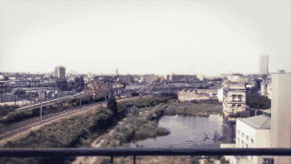
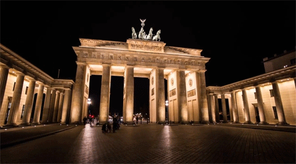

London

Geographical Location: United Kingdom
London is the capital of England and the UK. It has many iconic landmarks such as Buckingham Palace, Big Ben, red phone booths, and the London Eye (a ferris wheel) which overlooks the Thames river.
London is the largest city of England and the UK with a population of 9 million people. As a major global city London has strong connections with arts, entertainment, fashion, media, tourism, transportation and so much more. It is also europes largest concentration of high education institutions in subjects such as finance, arts and more!
Photo Gallery


Paris

Geographical Location: France
For centuries Paris has been one of the world’s most important and attractive cities. It offers opportunities and is a global center for art, fashion, culture, and cooking. Know as “the City of Light” the 19th century cityscape is made up of crisscrossing wide boulevards and the River Seine
Paris, France is home to many well known landmarks or architecture, famous art, and beloved culture. Some to note are the Eiffel Tower built in 1887, Arc de Triomphe built in 1806, the Louver home to many famous painting such as Picasso's “Mona Lisa” and Monet’s “Water Lilies”
Photo Gallery


Brussels
Geographical Location: Belgium
Brussels, the capital of Belgium is located in the valley of the Senne River. Brussels is known as the administrative, commercial and financial heart of Belgium. Brussels usually hosts many European Communities and is home to NATO (North Atlantic Treaty Organization)
In Belgium they do not share a common language, three languages are spoken across French, Flemish and Dutch, with French being the ‘main’ language. Fun fact there are two types of belgium waffles and one of them is named after Brussels - “the Brussels Waffle”
Photo Gallery
Berlin
Geographical Location: Germany
Berlin is the capital of Germany. It is known for its culture, politics, media and sciences. Berlin has one of the most complex transportation systems with trains and rail traffic as well as a hub for air travel.
One of many of Berlin's main attractions is the Berlin Wall. The Wall was designed to prevent people from escaping to east berlin in the 60’s. The Wall was about 96 miles long and between 11-15 ft high.
Photo Gallery


Madrid

Geographical Location: Spain
Madrid is the capital of Spain, it is a city of elegant boulevards, and expansive well kept parks such as the Buen Retiro. It is home to the center of all the roads in spain. Also known as ‘Kilometer 0’ this is where all the roads in Spain start.
Madrid is also known for its food. The quality of Spanish cuisine in Madrid is one of the worlds best spanish food scenes. But not only is the food great it is home to the oldest restaurant built in 1725, confirmed by the Guinness World Records.